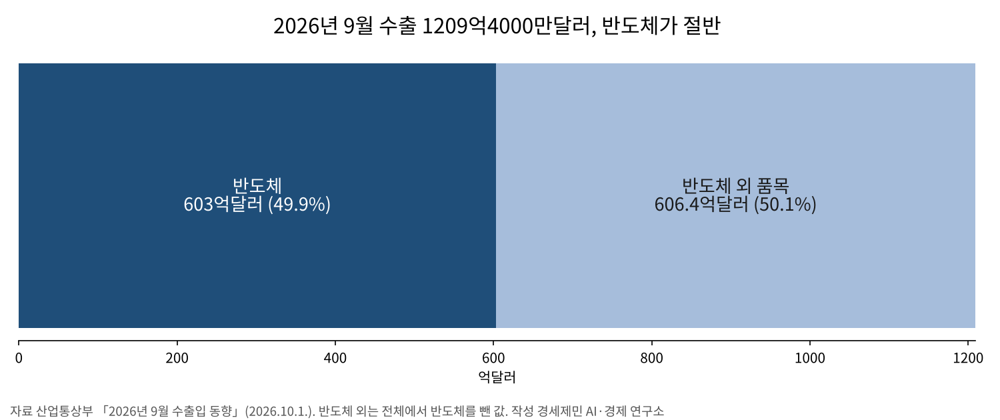
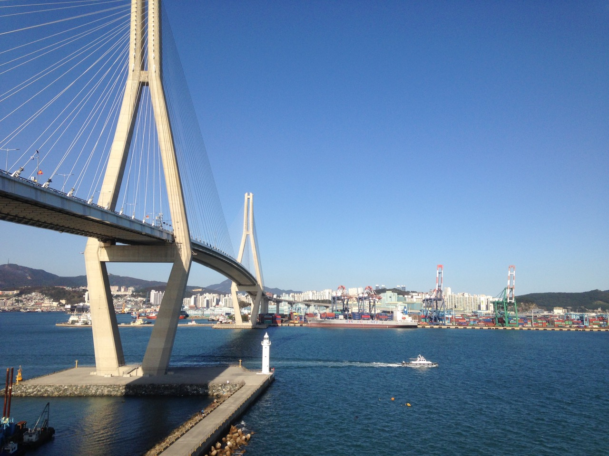
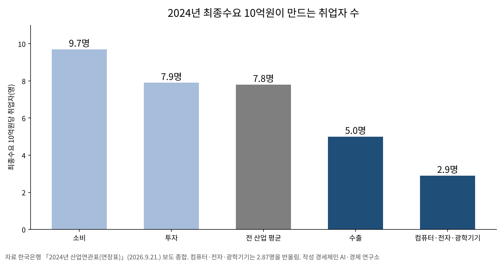

[수출·고용 브리핑] 수출 1209억달러 역대 최대, 제조업 고용보험 가입자는 외국인 빼면 4000명 줄어
반도체 603억달러로 수출 절반, 삼성전자 3분기 영업이익 107조4000억원
수출 10억원이 만드는 일자리 5.0명, 소비 9.7명의 절반
29세 이하 고용보험 가입자 5만5000명 감소, 60세 이상은 20만7000명 늘어
AI경세제민=김갑봉 기자 | 9월 수출이 1209억4000만달러로 한 달 기록을 새로 썼다. 1년 전보다 83.5% 늘었고, 반도체가 603억달러로 그 절반을 채웠다. 같은 달 고용보험에 든 제조업 노동자는 8000명 늘었다. 고용허가제 외국인 가입자를 빼고 세면 4000명 줄었다.
수출은 사상 최대인데 일자리는 따라오지 않는다. 늘어난 돈이 어디에 쌓였고 일자리는 왜 엇갈리는지 짚는다. 산업통상부와 고용노동부, 한국은행 통계를 맞댄다.
수출은 반도체 한 품목이 끌었다
산업통상부가 10월 1일 발표한 9월 수출은 1209억4000만달러다. 조업일수를 반영한 하루 평균 수출은 56억3000만달러로 105% 늘었다. 하루 평균이 50억달러를 넘은 것은 처음이다. 수입은 710억9000만달러로 26% 늘었다.
반도체 수출은 603억달러로 262.8% 늘었다. 한 품목이 처음 600억달러를 넘었고, 전체 수출의 49.9%를 차지했다. 반도체를 뺀 수출도 23% 늘었다. 산업통상부 분류로 컴퓨터는 435.3%, 선박은 29.9%, 화장품은 31.4% 늘었다.

쏠림은 빨라지고 있다. 국회예산정책처 집계로 5월 반도체 비중은 42.3%였다. 넉 달 만에 7%포인트 넘게 올랐다. 줄어든 품목도 있다. 관세청 확정치로 승용차는 5.6%, 가전제품은 7.6% 줄었다.
지역별로는 산업통상부 잠정치로 미국이 137%, 중국이 122.7% 늘었다. 아세안은 212억9000만달러로 처음 200억달러를 넘었다. 관세청 확정치로 중동은 14.1% 줄었다. 1~9월 누적 수출은 8145억달러로 지난해 연간 실적 7093억달러를 이미 넘었다.
관세청이 10월 15일 낸 확정치로는 9월 수출이 1211억달러, 증가율이 83.7%다. 무역수지는 500억달러 흑자로 20개월째 흑자가 이어졌다. 10월 들어서도 기세는 이어졌다. 1~10일 수출은 261억달러로 102% 늘었고, 반도체는 170.9% 늘었다.

반도체 기업 이익도 함께 뛰었다
삼성전자는 10월 8일 3분기 잠정실적을 냈다. 매출은 195조원, 영업이익은 107조4000억원이다. 영업이익은 1년 전보다 782.5%, 석 달 전보다 20% 늘었다. 매출 100원 가운데 55원이 영업이익으로 남았다.
나라 성장도 수출이 끌었다. 국회예산정책처는 7월 보고서에서 1분기 성장률(전년대비) 3.8% 가운데 순수출 기여도가 1.8%포인트라고 분석했다. 성장 몫의 47.4%를 수출에서 수입을 뺀 순수출이 만들었다. 성장의 절반 가까이를 바깥 수요가 떠받쳤다.
산업통상부 잠정치로 1~9월 누적 무역흑자는 2525억달러에 이르고, 9월 흑자는 498억5000만달러다. 수출 기록과 기업 이익 기록은 같은 계절에 나왔다. 일자리 통계에서는 같은 크기의 변화가 보이지 않는다.
일자리는 돌봄과 고령층이 늘렸다
국가데이터처 8월 고용동향(9월 9일 발표)에서 취업자는 2915만1000명이다. 1년 전보다 18만4000명 늘었다. 가장 많이 늘어난 쪽은 보건업·사회복지서비스업으로 18만6000명이다. 15~64세 고용률은 70.4%로 0.5%포인트 올랐다.
반면 제조업 취업자는 3만8000명 줄어 26개월째 감소했다. 건설업도 3만2000명 줄었다. 15~29세 청년 취업자는 14만3000명 줄어 46개월째 감소했다. 청년 고용률은 44.1%로 1.0%포인트 떨어졌다.
고용노동부 9월 고용행정 통계(10월 14일 발표)도 같은 그림이다. 고용보험 상시가입자는 1593만명으로 28만8000명 늘었다. 60세 이상이 20만7000명 늘었고, 29세 이하는 5만5000명 줄었다. 늘어난 가입자 열에 일곱이 60세 이상이다.
제조업 가입자는 385만3000명으로 8000명 늘어 두 달째 증가했다. 반도체 업종이 7300명, 조선이 든 기타운송장비가 7500명 늘었다. 두 업종을 빼면 나머지 제조업은 6800명 줄었다.
고용노동부는 고용허가제 외국인을 빼면 제조업이 4000명 줄었다며 해석에 주의를 당부했다. 29세 이하 가입자는 제조업에서 2만1000명 줄어 업종 가운데 가장 많이 줄었다. 제조업 가입자가 늘었다는 숫자 안에서 청년 자리는 줄었다.
정부는 흐름이 나아진다고 본다. 재정경제부와 고용노동부는 10월 8일 일자리전담반 회의에서 취업자 증가폭이 석 달째 커졌다고 평가했다. 고용노동부는 29세 이하 가입자 감소를 청년 인구 감소 등의 영향이라고 설명했다.
수출 10억원이 만드는 일자리는 5명
한국은행이 9월 21일 낸 2024년 산업연관표(연장표)를 보면 최종수요 10억원이 만드는 취업자는 7.8명이다. 2023년 8.2명에서 0.4명 줄었다. 같은 해 전업환산 취업자는 2596만명으로 2만8000명 줄었다.
쓰임새에 따라 차이가 크다. 같은 10억원이 소비로 쓰이면 9.7명, 투자로 쓰이면 7.9명이 일한다. 수출로 나가면 5.0명이다. 수출은 2023년 5.4명에서 더 줄었다. 수출 10억원은 소비 10억원이 만드는 일자리의 절반을 만든다.

반도체가 속한 컴퓨터·전자·광학기기 부문은 2.87명이다. 공산품 전체 4.7명보다도 낮다. 반도체 부가가치율은 2023년 38.5%에서 2024년 50.3%로 11.8%포인트 올랐다.
수출이 만든 부가가치 비중은 25.4%에서 28.2%로 2.8%포인트 커졌다. 수출이 만든 취업자 비중은 20.7%에서 22.2%로 1.5%포인트 올라 그에 못 미쳤다. 경제에서 수출이 차지하는 몫은 일자리보다 돈에서 더 빨리 커졌다.
부상돈 한국은행 투입산출팀장은 반도체가 고용 효과가 낮은 부문이어서 수출 호조에도 취업 유발 인원이 전년과 비슷했다고 설명했다. 그러면서 올해는 반도체 제조업 종사자가 늘고 있어 고용에 미치는 영향이 커질 가능성이 있다고 내다봤다.
취업유발계수는 10억원어치를 만들 때 일하는 사람 수다. 제품값이 오르면 같은 인원이 일해도 계수는 낮아진다. 그래서 계수가 떨어졌다고 곧바로 고용 창출력이 나빠졌다고 읽기는 어렵다.
다만 지금까지 나온 숫자를 나란히 놓으면 수출은 부가가치를 키웠고, 일자리는 돌봄과 고령층에서 났다. 반도체가 수출의 절반을 채울수록 수출과 고용 사이가 벌어질 수 있다. 수출 기록이 곧 일자리 기록은 아니다. 팀장의 전망이 맞는지가 지켜볼 대목이다.
위험은 쏠림과 청년에 있다
첫째는 쏠림이다. 수출 절반이 한 품목에 걸렸다. 메모리 값이 꺾이면 수출과 무역수지와 성장률이 한꺼번에 흔들릴 수 있다. 정부 일자리전담반도 중동전쟁 같은 대외 불확실성과 지난해 9월 기저효과를 고용 제약 요인으로 꼽았다.
둘째는 청년의 첫 일자리다. 한국은행 조사국은 8월 18일 이슈노트에서 2022년 6월부터 4년 동안 청년 일자리 28만5000개가 줄었다고 밝혔다. 그 94%인 26만8000개가 인공지능 노출이 큰 업종에서 사라졌다.
같은 기간 50대 일자리는 23만개 늘었다. 한국은행은 인공지능만의 탓으로 단정하기는 어렵다고 봤다. 코로나19 이후 산업별 고용 조정과 경력직 중심 채용, 재택근무 확산도 함께 작용했을 수 있어서다. 까닭이 무엇이든 청년이 첫 경력을 쌓을 자리가 줄고 있다.
셋째는 이익과 일자리 사이 거리다. 삼성전자 3분기 영업이익이 107조원을 넘었다. 9월 제조업 고용보험 가입자는 고용허가제 외국인을 빼면 1년 전보다 4000명 적었다. 그 이익이 협력업체 납품단가와 지역 일자리로 얼마나 번지는지 달마다 보여 주는 통계는 찾지 못했다.
물어야 할 것
경세제민 AI·경제 연구소는 세 곳에 묻는다. 정부에는 올해 수출 1조달러가 거론되는 만큼 일자리 목표도 함께 내걸 것인지 묻는다. 수출액을 발표하는 날 수출이 만든 국내 일자리와 청년 채용도 함께 내놓아야 성과를 제대로 잴 수 있다.
반도체 기업에는 사상 최대 이익 가운데 얼마를 국내 신규 채용과 협력업체 몫으로 돌릴지 묻는다. 이익은 지금 회사 장부에 잡혀 있다. 일자리 숫자는 아직 그만큼 움직이지 않았다. 호황이 끝난 뒤에도 남을 일자리가 얼마인지가 물음의 핵심이다.
국회에는 2027년 예산 심의를 묻는다. 반도체 이익이 법인세로 돌아오면 그 돈을 어디에 쓸지 정해야 한다. 청년 첫 일자리와 수출 의존이 큰 지역의 산업 전환이 그 자리에 들어가는지 따져야 한다.
확인하지 못한 것
국가데이터처 9월 고용동향은 이 글을 쓴 10월 16일 아침까지 나오지 않았다. 그래서 취업자 통계는 8월 기준이고, 9월 값은 고용보험 가입자 통계로 갈음했다. 두 통계는 대상과 연령 구간이 다르다.
한국은행 2024년 산업연관표 원문은 열지 못했다. 같은 날 나온 보도 아홉과 한국은행 2023년 연장표 게재본으로 맞댔다. 반도체만 떼어 낸 2024년 취업유발계수는 한 매체만 보도해 본문에 쓰지 않았다. 고용행정 통계의 업종 세부와 외국인 제외 값은 첨부 원문을 열지 못해 보도 넷으로 맞댔다.
산업통상부·관세청·국가데이터처 누리집 원문은 자동 열람이 막혔다. KDI 경제교육·정보센터에 실린 기관 자료와 보도로 확인했다. 삼성전자 실적은 잠정치이고, SK하이닉스 3분기 실적은 아직 발표되지 않았다.
보도에 걸리는 것
9월 수출은 1209억달러와 1211억달러가 함께 돈다. 앞은 산업통상부 10월 1일 잠정치이고 뒤는 관세청 10월 15일 확정치다. 반도체 증가율도 262.8%와 260.3%로 갈리고, 무역흑자도 498억5000만달러와 500억달러로 다르다.
「제조업 고용 두 달째 증가」는 외국인을 넣은 값이다. 고용노동부가 고용허가제 외국인 당연가입분을 빼고 다시 센 값은 4000명 감소다. 제목만 읽으면 반대로 읽힌다.
서울경제 9월 21일 기사 제목의 「취업유발효과 1년 새 21% 급감」은 반도체만의 값이 아니다. 본문은 반도체가 속한 컴퓨터·전자·광학기기 부문 계수가 3.62명에서 2.87명으로 20.8% 떨어졌다고 적었다.
반도체 부가가치율 2023년 값도 갈린다. 서울경제·현대경제·뉴스핌은 38.5%, 아이뉴스24는 18.9%로 적었다. 18.9%로 읽으면 1년 새 2.7배가 되고, 38.5%로 읽으면 1.3배다.
청년 수치도 섞인다. 고용동향의 청년은 15~29세 취업자이고, 고용행정 통계는 29세 이하 고용보험 가입자다. 14만3000명과 5만5000명은 서로 다른 통계의 값이라 더하거나 견주면 안 된다.
참고문헌
공식 발표자료와 기관 보고서
- 관세청 정보데이터정책관, "2026년 9월 월간 수출입 현황 [확정치]", 2026.10.15., KDI 경제교육·정보센터 게재, https://eiec.kdi.re.kr/policy/materialView.do?num=288151
- 관세청 정보데이터정책관, "2026년 10월 1일 ~ 10월 10일 수출입 현황 [잠정치]", 2026.10.12., KDI 경제교육·정보센터 게재, https://eiec.kdi.re.kr/policy/materialView.do?num=287971
- 관세청 정보데이터정책관, "2026년 9월 1일 ~ 9월 20일 수출입 현황 [잠정치]", 2026.9.21., KDI 경제교육·정보센터 게재, https://eiec.kdi.re.kr/policy/materialView.do?num=287232
- 과학기술정보통신부·산업통상부, "2026년 9월 정보통신산업(ICT) 수출입 동향", 2026.10.14., KDI 경제교육·정보센터 게재, https://eiec.kdi.re.kr/policy/materialView.do?num=288070
- 국가데이터처 고용통계과, "2026년 8월 고용동향", 2026.9.9., KDI 경제교육·정보센터 게재, https://eiec.kdi.re.kr/policy/materialView.do?num=286555
- 고용노동부 미래고용분석과, "2026년 9월 고용행정 통계로 본 노동시장 동향", 2026.10.14., KDI 경제교육·정보센터 게재, https://eiec.kdi.re.kr/policy/materialView.do?num=288091
- 재정경제부 인력정책과, "관계부처 합동 일자리전담반 회의 개최", 2026.10.8., KDI 경제교육·정보센터 게재, https://eiec.kdi.re.kr/policy/materialView.do?num=287921
- 국회예산정책처, "반도체 수출 호조와 올해 우리 경제 성장", 2026.7.1., KDI 경제교육·정보센터 게재, https://eiec.kdi.re.kr/policy/domesticView.do?ac=0000206020
- 한국은행 투입산출팀, "2023년 산업연관표(연장표)", 2025.9.24., KDI 경제교육·정보센터 게재, https://eiec.kdi.re.kr/policy/materialView.do?num=271556
- 삼성전자, "삼성전자, 2026년 3분기 잠정실적 발표", 삼성전자 뉴스룸, 2026.10.8., https://news.samsung.com/kr/삼성전자-2026년-3분기-잠정실적-발표
언론 보도
- 전예현, "지난달 반도체 첫 600억 달러 돌파… 수출 '1조 달러' 시간문제", 한국일보, 2026.10.1., https://www.hankookilbo.com/news/article/A2026100109120004688
- 최은경, "역대 최대 수출에도 과제 산적…산업별 격차 커", 폴리뉴스, 2026.10.14., https://www.polinews.co.kr/news/articleView.html?idxno=745700
- 김윤진, "삼성전자, 3분기 잠정실적 발표…영업익 107조원 달성", 뉴스포스트, 2026.10.8., https://www.newspost.kr/news/articleView.html?idxno=226204
- 이수한, "삼성전자, 2026년 3분기 잠정실적 발표", 내외일보, 2026.10.8., https://www.naewoeilbo.com/news/articleView.html?idxno=2428298
- 송금종, "8월 취업자 18.4만명 증가···청년 고용은 46개월째 감소", 서울파이낸스, 2026.9.9., https://www.seoulfn.com/news/articleView.html?idxno=637548
- 박상섭, "제조업 고용 두 달째 증가…외국인 빼면 4000명 감소", 경제타임스, 2026.10.15., https://www.ket.kr/news/article.html?no=41403
- 정윤섭, "고용보험 28.8만명 늘었지만…29세 이하 5.5만명 줄어 49개월째 감소", 이슈온, 2026.10.15., https://www.issueon.co.kr/news/articleView.html?idxno=14112
- 곽도훈, "제조업 고용보험 8000명 증가…반도체·기타운송장비 빼면 6800명 감소", 이포커스, 2026.10.15., https://www.e-focus.co.kr/news/articleView.html?idxno=3003068
- 이예빈, "2024년 반도체 수출 기여도 증가…취업유발 뒷걸음", 시대, 2026.9.21., https://www.sidae.com/article/2026092114014828810
- 하영수, "한국은행 'AI 고노출 업종서 청년 일자리 감소 집중…4년간 26.8만개 줄어'", CBC뉴스, 2026.8.18., https://www.cbci.co.kr/news/articleView.html?idxno=598982
사진 출처
- [사진1] Cameron Smith(미국 백악관 공식 사진), "P20220520CS-0484 (52195348752).jpg", 위키미디어 공용, 퍼블릭 도메인, 2022.5.20. 촬영, https://commons.wikimedia.org/wiki/File:P20220520CS-0484_(52195348752).jpg
- [사진2] Gunnar.Kaestle, "2018-10-20 Busan Harbor Bridge with Container Terminal.jpg", 위키미디어 공용, CC0 1.0(퍼블릭 도메인 기증), 2018.10.20. 촬영, https://commons.wikimedia.org/wiki/File:2018-10-20_Busan_Harbor_Bridge_with_Container_Terminal.jpg
- [도표1] 경세제민 AI·경제 연구소 작성, 자료 산업통상부 「2026년 9월 수출입 동향」(2026.10.1.) 보도
- [도표2] 경세제민 AI·경제 연구소 작성, 자료 한국은행 「2024년 산업연관표(연장표)」(2026.9.21.) 보도
사진 출처
· [대표사진] NASA, "Portbusan satpic 1988289-NASA.jpg", 위키미디어 공용, 퍼블릭 도메인, https://commons.wikimedia.org/wiki/File:Portbusan_satpic_1988289-NASA.jpg
※ 이 브리핑은 인공지능을 활용해 작성했습니다.
관련기사
- [거시경제] 이윤은 18.5% 늘고 임금은 1.9% 늘었다
- [가계부채 브리핑] 가계대출 9개월 만에 2조2000억원 감소, 주택담보대출은 3조3000억원 늘어
- 인천 신설구 100일, 법은 「지원하며」라 썼는데 개편 국비 예산은 두 해째 0원
- 인천시와 군·구는 무엇을 연구에 맡기나, 정책연구 727건을 다 세어 봤다
저작권자 © AI경세제민 무단전재 및 재배포, AI학습 및 활용 금지